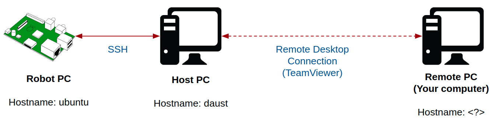
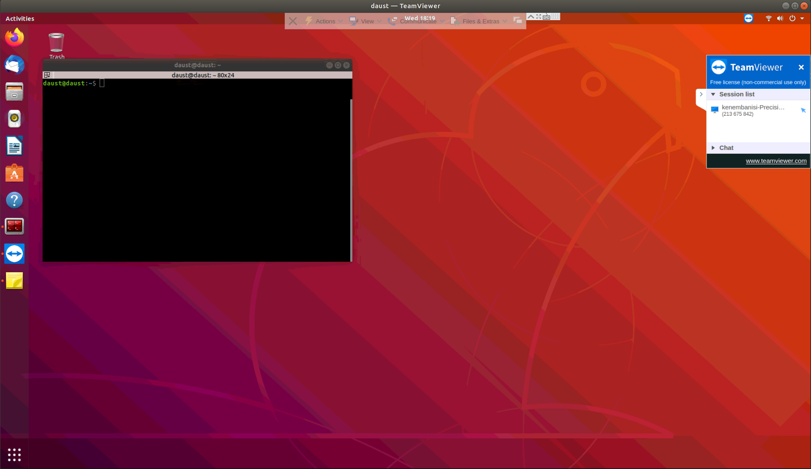
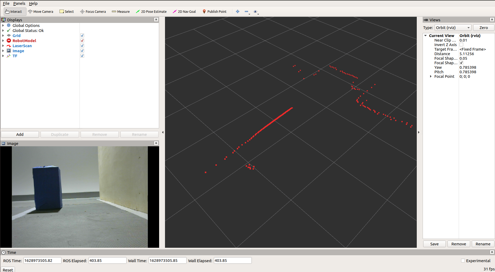

Testing on Physical Robot¶
Teams will be able to test their software on the physical robot once every week for a testing window of two (2) hours.
Schedule your Test Time¶
To schedule your test time every week, please visit the Test Scheduler.
- Click "Slot me in" and the insert your team name and email address.
- You will receive an email containing your login details no later than 1 hour before your session is to begin.
- If you can't find a convenient time on the schedule, we have a back up time every week (3-5pm GMT). Reach out to us here to schedule that.
Accessing the Physical Robot¶
During your scheduled session, you will be provided remote access to control the robot using the following protocol:
- Remote Desktop Connection: Using remote desktop software (e.g. TeamViewer), you will be able to remotely view and control the Host PC in our base location in Senegal.
- SSH (Secure Shell Protocol): This protocol enable commandline access and remote command execution on the robot PC (Raspberry Pi).

Step 0: Prerequisites¶
Install TeamViewer remote deskstop software on your PC. For download instructions, see here
Step 1: Access the Host PC using TeamViewer¶
You will receive an email for our technical team on the day of your scheduled session with the following information:
- User ID and Password for accessing the TeamViewer account on the Host PC
- Password of the Host PC
Step 2: Open a terminal on the Host PC¶
We recommend you use the Terminator terminal as it enables you split the terminal screen efficiently.

Step 3: Create your own team workspace¶
Please check the Team Naming Convention page to find your official team numbered name.
# change directory to "team_workspaces"
cd ~/team_workspaces
# create your team workspace folder, i.e. "<official-team-numbered-name>", e.g. "team-1-asimov"
mkdir -p <official-team-numbered-name>/src
# change directory into the new folder and run the workspace command
cd <official-team-numbered-name> && catkin_init_workspace src
# make your entire workspace
catkin_make
Step 4: Clone your github repository into your "src" folder¶
cd ~/team_workspaces/<official-team-numbered-name>/src
git clone <your-git-repository>
Step 5: Ensure all your dependencies are installed¶
cd ~/team_workspaces/<official-team-numbered-name>/
sudo apt update
rosdep install --from-paths ./src --ignore-src -y
# Also, you might need to manually install any other packages required
Step 6: Compile your solution¶
cd ~/team_workspaces/<official-team-numbered-name>
catkin_make
Step 7: Find the current IP of the Robot PC (ubuntu)¶
# open a new terminal
sudo nmap -sn 192.168.1.0/24
# you will be prompted to provide a password, type: "daust"
# note the IP address of the device with hostname: "ubuntu"
Step 8: Create a bash session on the robot using the SSH protocol¶
# open a new terminal
ssh ubuntu@<IP-address-from-step-7>
# e.g. ssh ubuntu@192.168.1.112
# you will be prompted to provide a password, type: "turtlebot"
Step 9: Bring up the robot¶
# on the host PC, i.e. terminal with "daust@daust", run:
roscore
# on the open robot bash session, i.e. "ubuntu@ubuntu:~$", run
roslaunch turtlebot3_parc turtlebot3_robot.launch
# check that the robot is publishing topics on the ROS network
# on your host PC:
roslaunch parc-robot robot.launch
# this will launch RViz and show the robot
If everything is working properly, you should have the RViz window looking like the image below:

Step 10: Run your solution¶
# on the host PC:
source ~/team_workspaces/<official-team-numbered-name>/devel/setup.bash
roslaunch <your-package-name> task_solution.launch
Saving your tests for offline troubleshooting¶
It is important that you save your data during your testing period to enable you run troubleshooting offline on your own time. ROS provides a very convenient tool, called rosbags, to enable you record the data generated during your runs and play them back later.
Please check out the link for the official documentation on rosbags.
To give it a try, follow the instructions below:
# in a new terminal on the host PC, run:
rosbag record -a # this is to record all the topics. This might lead to a very large *.bag file
# check out other rosbag commands such as "play", "compress", etc.
Follow this link for a video tutorial.